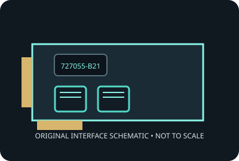

[ MODEL-SPECIFIC NETWORK HARDWARE ]
HPE Ethernet 10Gb 2-Port 562SFP+ Adapter (727055-B21)
Dual-port 10GbE SFP+ server adapter for qualified HPE ProLiant platforms. Record applies to the exact SKU named here; verify the physical label and revision.

IDENTIFICATION: Product label: 727055-B21. Link rates are nominal negotiated signaling rates, not measured throughput.
Specifications and OS compatibility
| Catalog subcategory | Ethernet adapters |
|---|---|
| Exact product SKU | 727055-B21 |
| Controller | Broadcom BCM57810S dual-port 10GbE controller. |
| Bus, lane and port interface | PCI Express 2.0 x8; two SFP+ cages for supported optical transceivers or DAC cables. |
| Ports and media | 2 port(s); 10GbE SFP+ interface. |
| Nominal line rate (not measured) | Two independent 10 Gb/s SFP+ Ethernet links; 20 Gb/s aggregate nominal line rate. Module, cable and peer determine link compatibility. |
| Operating systems and drivers | HPE-qualified OS packages vary by ProLiant generation; HPE lists supported Windows Server, Linux distributions and VMware releases in the adapter QuickSpecs/support portal. Do not assume generic OS support equals HPE qualification. |
| Compatibility notes | Intended for specified HPE ProLiant servers with compatible firmware and SFP+ media. Verify server compatibility, transceiver coding and supported OS using HPE QuickSpecs; do not infer interoperability from SFP+ form factor alone. |
| Measured throughput | No physical specimen benchmark is claimed. A meaningful result must identify host, peer, link partner, media, driver/firmware, traffic pattern, test tool and duration. |
Model and revision notes
Intended for specified HPE ProLiant servers with compatible firmware and SFP+ media. Verify server compatibility, transceiver coding and supported OS using HPE QuickSpecs; do not infer interoperability from SFP+ form factor alone.
Confirm exact card revision, device ID, transceiver/cable type, host firmware, bracket and driver build before installation. Use vendor qualification data for server/NAS deployment.
Preservation and measurement notes
Record card revision, controller marking and driver/firmware versions. Power down before installation; handle by edges and store in ESD shielding.
No measured throughput is represented by the nominal line rate. Record peer, media, negotiated rate, traffic pattern, test tool and duration for any future benchmark.
Manufacturer sources and documentation
- HPE 562SFP+ adapter QuickSpecs (PDF)HPE product-family specifications and qualified systems. Original page is gone; this is the Internet Archive’s copy.
- HPE 727055-B21 product catalogManufacturer product identity and platform qualification.
- Broadcom BCM57810 controller familyController vendor Ethernet adapter family reference; HPE compatibility takes precedence.
Manufacturer documentation takes precedence for exact SKU, board revision and platform qualification; controller-family data alone does not establish card compatibility.